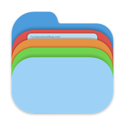
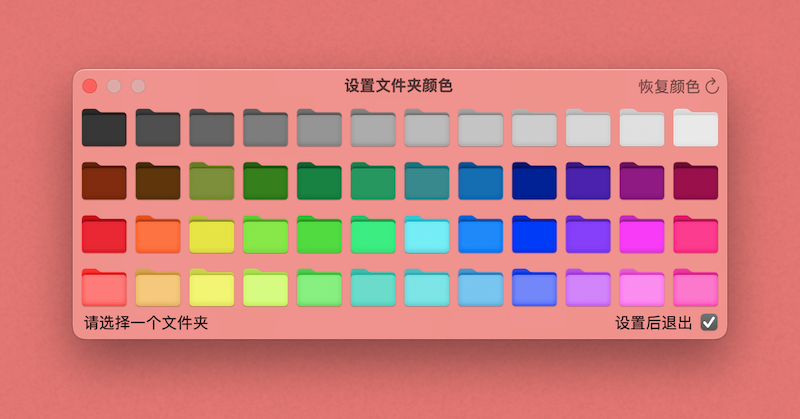

文件夹改色

功能介绍
快速修改你的文件夹颜色
Quickly Change your folder color

通过右键菜单快速修改你的文件夹颜色。
Quickly change your folder color through the right-click menu.
App提供了多大48种颜色可以选择。
The app provides up to 48 colors to choose from.
你可以选择一个或多个项目，进行同时设置。
You can select one or more items and set them at the same time.
提供恢复原色功能，可以将文件夹恢复到最初的样子。
Provides the function of restoring the original color, which can restore the folder to its original appearance.